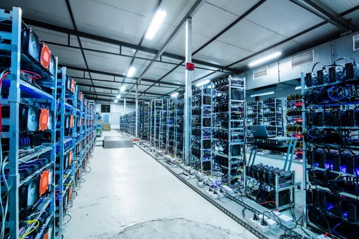

O Bitcoin é a primeira criptomoeda descentralizada do mundo, criada em 2009 por uma pessoa ou grupo sob o pseudônimo de Satoshi Nakamoto. Ele revolucionou o sistema financeiro e introduziu o conceito de blockchain.
O Bitcoin é uma moeda digital que permite transações peer-to-peer (P2P) sem a necessidade de intermediários, como bancos. Ele é baseado em uma tecnologia chamada blockchain, que garante segurança e transparência.
Para saber mais sobre como o Bitcoin funciona, visite o site oficial do Bitcoin.
O Bitcoin foi introduzido em 2009 com o lançamento de seu whitepaper por Satoshi Nakamoto. Desde então, ele cresceu exponencialmente em valor e popularidade.

Em 2010, a primeira transação comercial com Bitcoin foi realizada, quando Laszlo Hanyecz comprou duas pizzas por 10.000 BTC.
O Bitcoin não é controlado por nenhum governo ou instituição financeira, o que o torna resistente à censura e à interferência.
A tecnologia blockchain garante que todas as transações sejam seguras e imutáveis.

Para entender mais sobre a segurança do Bitcoin, acesse Blockchain.com.
O Bitcoin enfrenta desafios, como a volatilidade de preço e o alto consumo de energia na mineração. Além disso, críticos argumentam que ele pode ser usado para atividades ilegais.
Leia mais sobre os desafios do Bitcoin em CoinDesk.
O futuro do Bitcoin é incerto, mas muitas pessoas acreditam que ele continuará a crescer e a influenciar o sistema financeiro global. Empresas como Tesla já investiram em Bitcoin, e países como El Salvador o adotaram como moeda legal.
Para acompanhar as últimas notícias sobre o Bitcoin, visite CoinTelegraph.
O Bitcoin é uma inovação revolucionária que mudou a forma como pensamos sobre dinheiro e tecnologia. Seu impacto no mundo financeiro e tecnológico continuará a ser discutido e estudado nos próximos anos.
Para mais informações, consulte a página da Wikipédia sobre Bitcoin.